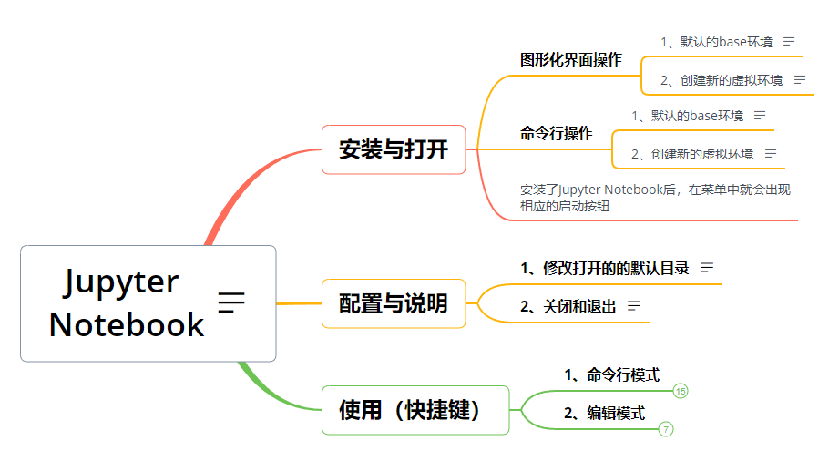
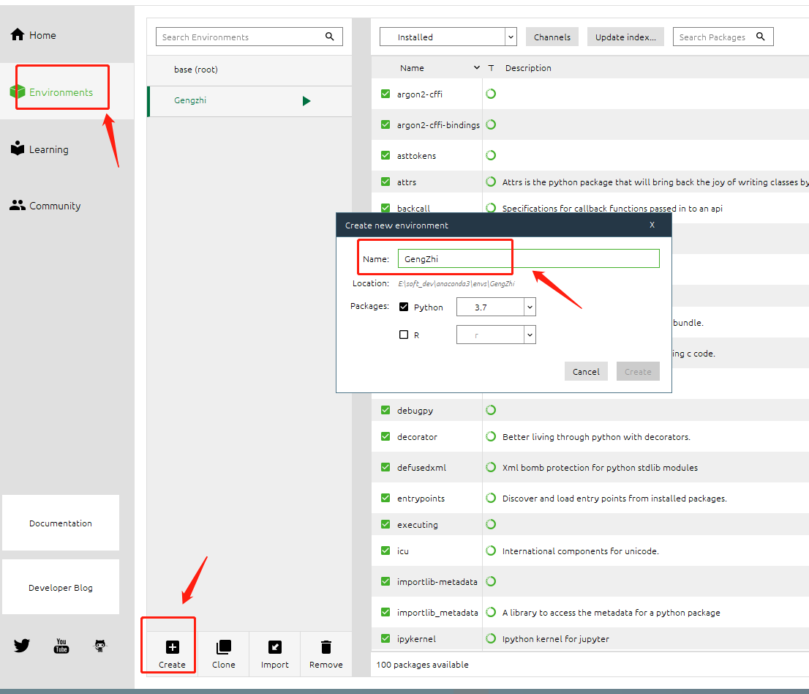
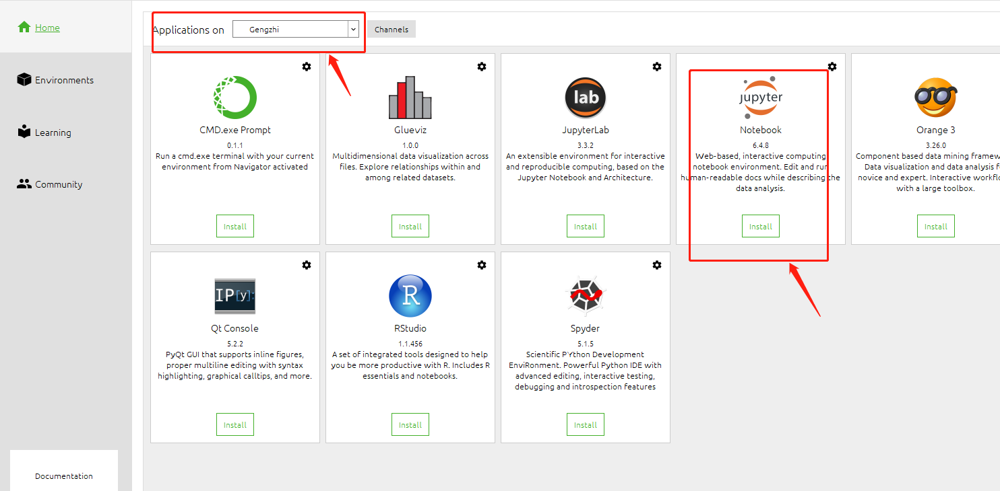
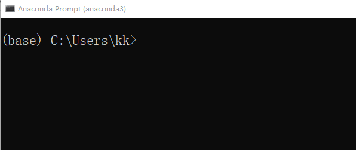
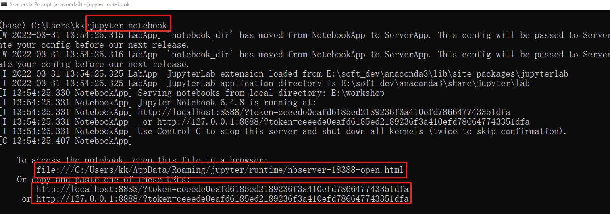

1-3 Jupyter Notebook 快速上手¶
Jupyter Notebook特点¶
支持markdown语法
支持LaTeX公式
允许把代码写入到独立的cell中，然后单独执行，无需从头开始执行代码
教程结构¶

1. Jupyter的安装与运行¶
1.1 图形化界面操作¶
1.1.2 创建新的虚拟环境¶
打开Anaconda,在Environments界面，创建新的python虚拟环境

然后回到home界面，点击install按钮安装Jupyter Notebook

安装完成后点击launch按钮运行
1.2 命令行操作¶
1.2.1 默认的base环境¶
打开Anaconda Prompt命令行： 因为base环境默认已经安装了Jupyter Notebook

所有直接输入命令： jupyter notebook 运行

1.2.2 创建新的虚拟环境¶
打开Anaconda Prompt命令行：首先创建一个新的虚拟环境
conda create -n Gengzhi python=3.7
然后切换到Gengzhi环境：conda activate Gengzhi
然后进行安装： conda install jupyter notebook
安装完成后输入命令运行： jupyter notebook